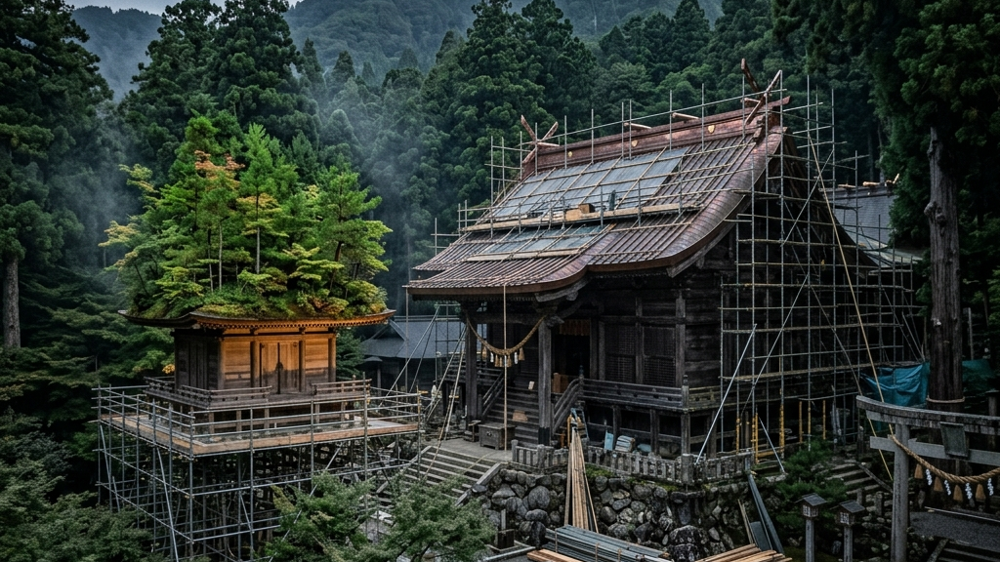
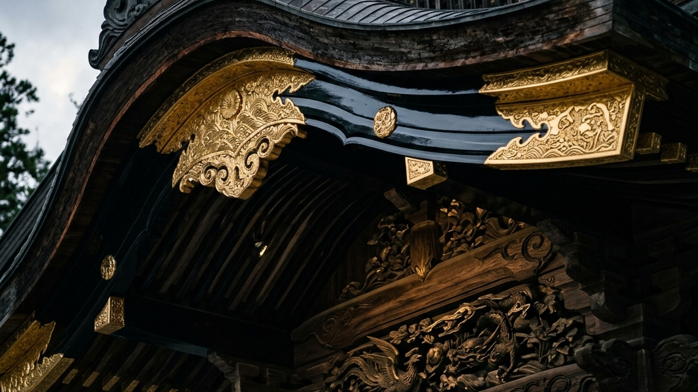

124年という圧倒的な時間が巻き戻されようとしている。太宰府天満宮の本殿大改修。それは単なる建物の修理ではなく、100年単位の歴史と職人の執念が激突する「蘇生」の儀式である。
【本稿で紐解く3つの核心】
現代社会は、あらゆるものを効率化し、最短距離で結果を出すことを至上命題としている。しかし、日本の伝統建築の修復現場に足を踏み入れれば、その常識は一瞬にして粉砕される。そこにあるのは、途方もない手作業の連続であり、自然素材というコントロール不能な他者との格闘である。今回、124年ぶりにベールを脱いだ太宰府天満宮の御本殿大改修と、その間、天神さまの住まいとして人々を魅了した仮殿の解体。この喪失と再生のサイクルは、私たちに何を突きつけるのか。単なる文化財保護という枠組みを超え、100年先を見据えた「真のサステナビリティ」と「引き算の美学」の深淵へと潜っていく。

菅原道真公の没後1125年となる2027年の式年大祭。この歴史的な節目に向け、太宰府天満宮の重要文化財である御本殿は、約3年という歳月をかけて完全なる蘇生を遂げた。
途方もない時間軸である。前回の大改修が行われたのは124年前。我々が日常で扱うスパンとは次元が異なる。現在の御本殿は1591年（天正19年）、小早川隆景によって再建された桃山時代の豪壮な建築様式を色濃く残している。400年以上の風雪に耐え抜いてきたこの躯体を解剖し、傷んだ部位を摘出し、新たな命を吹き込む作業は、まさに極限の「臨床」と言える。そこにはマニュアル化された効率論が入る隙はない。国立文化財修理センター京都設立から紐解く伝統工芸の臨床と蘇生の事例が示すように、文化財の修復とは、過去の職人たちが残した無言のメッセージを指先で読み解き、現代の技術で応答する果てしない対話なのだ。
「効率化の果てに失われるのは、手触りという名の記憶である。」
— 伝統建築が突きつける沈黙の真理
この大改修において、職人たちは124年前の先人たちがどのように木を刻み、どのように漆を塗ったのかを、解体しながら逆算していく。CADで描かれた図面通りに組み立てる現代建築とは真逆のベクトルだ。木材一つをとっても、乾燥具合や繊維の向き、過去の修復痕など、すべてが異なる。その微細なノイズを読み取り、鉋（かんな）の刃の角度を微調整する。この圧倒的な物理的摩擦こそが、伝統建築に魂を宿らせる唯一の手段なのだ。伊勢神宮の式年遷宮とお木曳 2033年に向けた日程と参加する人々の熱量が示すように、数十年、あるいは100年単位のサイクルで意図的に破壊と再生を繰り返すシステムこそが、日本の木造建築を永遠足らしめている。
小早川隆景の寄進により、現在の壮麗な御本殿（五間社流造）が再建される。
先人たちによる大規模な修復。この時の職人の息遣いが、今回の解体で再び姿を現した。
約3年の歳月をかけた改修が完了。漆は塗り直され、檜皮葺の屋根は真新しい輝きを取り戻した。
この124年というスパンは、偶然の産物ではない。木材の寿命、漆の劣化、そして何より「技術を伝承する人間の寿命」を計算し尽くした、極めて合理的な生態系である。次の100年へバトンを繋ぐため、今の職人たちは自らの人生のピークをこの一瞬に叩き込む。その熱量と狂気こそが、太宰府天満宮という場に1100年以上続く強烈な引力を生み出しているのだ。我々は、この途方もない時間軸の前に立つとき、自らの日常の「タイパ」がいかに浅薄なものであるかを思い知らされるのである。
御本殿が124年の眠りにつき、大改修のメスを入れられている間、天神さまのお住まいとして参拝者を迎えていたのが、現代建築家・藤本壮介氏の設計による「仮殿」である。「浮かぶ森」と名付けられたその空間は、伝統的な神社の概念を根底から覆す、あまりにも前衛的で、それでいて静謐な建築だった。
屋根の上には、太宰府天満宮の豊かな自然がそのまま飛翔して留まったかのように、サクラやモミジ、シャクナゲなど数十種類の植物が植えられていた。季節が巡るごとに葉の色は移ろい、天候によってその表情を変える。建築物でありながら、生きた森として呼吸を続けるその姿は、訪れる者の視覚と精神に強烈な余韻を残した。西陣織と引箔──千年の歴史を織り込む静謐なる美学と至高の職人技にも通じる、自然素材の不確実性をあえて取り込み、時間経過をデザインの一部とする日本独自の美意識の極致である。
| 建築の概念 | 西洋的アプローチ | 「仮殿」が示したアプローチ |
|---|---|---|
| 時間に対する態度 | 石やコンクリートによる永遠の固定 | 季節で移ろう植物の受容と有限性 |
| 存在のベクトル | 重力に逆らい天へそびえるモニュメント | 周囲の森と溶け合い、境界を曖昧にする器 |
しかし、この「浮かぶ森」は、御本殿の蘇生が完了した今、解体の運命にある。たった3年間。歴史的なスパンで見れば、ほんの一瞬の瞬きのような時間である。莫大なコストと知恵を注ぎ込んで生み出されたこの奇跡のような空間を、あえて残さずに消し去る。その潔さこそが、このプロジェクトの真の狂気であり、カタルシスなのだ。
私たちは、形あるものを永遠に残そうと執着する。しかし、日本の伝統は「形」への執着を否定する。桜が散るからこそ美しいように、この仮殿もまた、人々の記憶の中にのみ鮮烈に残り、物理的には完全に消滅する道を選んだ。5月19日から始まる解体作業は、単なる撤去工事ではない。それは、一時的に借りていた森を、再び自然へと還す「返却の儀式」なのである。喪失を前提として構築された美学は、永遠を約束されたいかなる建造物よりも深く、私たちの心に突き刺さる。

御本殿の改修において、最も過酷で、かつ最も崇高なプロセスが屋根の「檜皮葺（ひわだぶき）」の全面葺き替えと、「漆塗り」の修復である。どちらも現代のテクノロジーをもってしても、一切の効率化が許されない領域だ。
檜皮葺とは、文字通りヒノキの樹皮を剥ぎ取り、それを少しずつずらしながら何重にも重ね、竹釘で固定していく日本古来の技法である。まず、原料となる檜皮を調達する段階から狂気が始まる。生えているヒノキの皮を、木を枯らさないように職人が一枚ずつ手作業で剥いでいくのだ。剥いだ皮を整形し、束ね、屋根の上へと運ぶ。そして、途方もない枚数の檜皮を少しずつずらしながら、一本一本竹釘を口に含み、専用の金槌で打ち込んでいく。岡太神社と大瀧神社 檜皮葺の「日本一複雑な屋根」と職人の手仕事でも言及されるように、この「一枚重ねては打つ」という単調で過酷な肉体労働の無限の反復だけが、あの優美で重厚な屋根の曲線を形作るのである。
一方、漆塗りもまた、想像を絶する手間の結晶である。124年分の汚れと劣化した古い漆を丁寧に剥がし落とし、木地を整え、下地を施し、幾度も漆を塗り重ねていく。漆は湿気によって硬化するため、天候や気温、湿度を肌で感じ取りながら、乾くタイミングを完璧に見極めなければならない。本金糸と千年の構造証明─西陣織を支える漆と和紙の定着技術に見られるように、漆という天然の接着剤・保護材は、完全に定着するまでに数十年、時には100年単位の時間を要する。塗って終わりではなく、塗ってからが本番なのだ。
これらの工程には、「タイパ」という概念が存在しない。いや、あえてタイパを捨て去ることでしか、到達できない強度があるのだ。CADで設計し、工場でプレカットされた建材を現場でボルト留めする現代建築は、たしかに早くて安い。しかし、そこには「人間の痕跡」がない。檜皮の束を力強く打ち込む職人の息遣い、漆の表面をミリ単位で研ぎ出す指先の感覚。この果てしない物理的摩擦の蓄積こそが、建築物に魂を宿らせ、100年先の人々を圧倒する「威厳」へと変貌する。職人たちは、建物を直しているのではない。100年分の祈りと技術を、木と漆という媒体を通じて次の時代へと転送しているのだ。
Core Principles of Restoration

124年に一度の大改修と、たった3年で解体される仮殿。この両極端な時間軸が交差する太宰府天満宮の境内は、我々に一つの痛烈な問いを突きつけている。「効率の先にあるものは、本当に豊かさなのか」と。
ビジネスの最前線にいると、どうしても「いかに早く、いかに安く、いかに予測可能にプロジェクトを進めるか」というKPI至上主義に陥りがちだ。数値を管理し、進捗を可視化することで、上に立つ人間は安心感を得る。しかし、完璧にマニュアル化されたコンクリートのような組織は、想定外の強風（トラブル）に遭遇した途端、脆くも崩れ去る。余白がなく、マニュアル以外の対応ができないからだ。
一方で、檜皮葺の屋根や漆塗りのような伝統技法は、一見すると非効率の極みである。自然素材というノイズだらけの変数を相手にし、職人の暗黙知という数値化不可能な感覚に依存する。しかし、この「思い通りにいかない余白」と「圧倒的な物理的摩擦」を受け入れることこそが、実は最も強靭なエコシステムを生み出しているのだ。100年経てば必ず劣化し、破壊されることを前提とし、そのたびに職人たちが総出で解体し、己の血肉を持てる技術のすべてを注ぎ込んで再び組み上げる。この終わりのない「蘇生のサイクル」があるからこそ、技術は絶えることなく次世代へと継承され、建物は1000年の時を生きながらえることができる。
翻って、私たちの組織マネジメントはどうだろうか。効率化の名の下に、摩擦を極端に恐れていないだろうか。部下と衝突するリスクを避け、数値だけを見て「管理」した気になっていないだろうか。相手が傷つくリスクを背負ってでも、あえて厳しい刃を抜き、本気で向き合う。数値化できない泥臭い「思考体力」を鍛え上げるための時間を投資する。それは、短期的なKPIから見れば完全に「無駄」で「非効率」かもしれない。しかし、その強烈な摩擦の中でしか、人間は本当の意味で育たない。進捗が見えない恐怖を受け入れ、泥臭い摩擦を許容する。それこそが、上に立つ人間に求められる本当の覚悟なのだ。
124年前の職人が見上げ、現代の職人が蘇らせ、そして100年後の職人が再び解体するであろう太宰府天満宮の御本殿。そこには、効率という薄っぺらい概念を嘲笑うかのような、途方もないスケールの「狂気」と「執念」が静かに鎮座している。私たちが後世に残すべきものは、完成された完璧なシステムではない。それを壊し、再び立ち上げるだけの熱量を持った、人間の泥臭い生態系そのものなのである。
Reference:
太宰府天満宮本殿、124年ぶり大改修終了 「浮かぶ森」の仮殿は5月19日から解体（西日本新聞）
伝統を身に纏い、1,000年先の未来へ遺す。Kakeraが織り上げる西陣織アロハシャツの哲学と私たちの物語は、CONCEPT、Kakera Aloha、およびABOUTよりご覧いただけます。